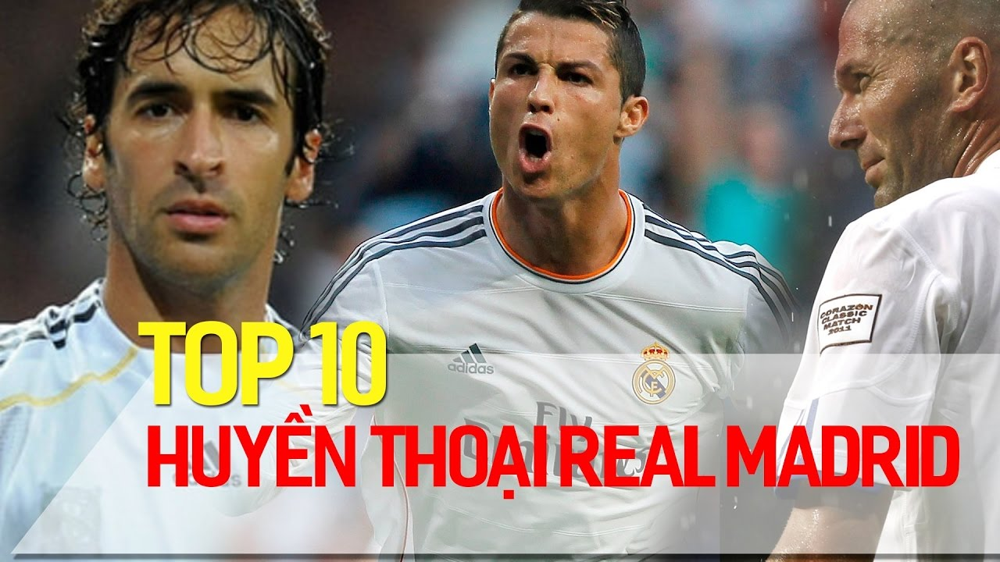

Một số huyền thoại được hầu hết người hâm mộ và chuyên gia bóng đá công nhận là những cầu thủ xuất sắc nhất mọi thời đại của Real Madrid:
- Cristiano Ronaldo – chân sút hay nhất lịch sử CLB, người có công lập nên 3 lần liên tiếp vô địch C1 của Real Madrid
- Alfredo Di Stéfano – người đã giúp Real Madrid khẳng định vị thế tại châu Âu trong thập kỷ 1950–60.
- Paco Gento – một trong những cầu thủ có nhiều danh hiệu nhất lịch sử CLB.
- Raúl González – biểu tượng của lòng trung thành và hiệu suất ổn định.
- Sergio Ramos – một trong những hậu vệ xuất sắc và có ảnh hưởng lớn nhất lịch sử Real.
- Ngoài ra, các tên như Zinedine Zidane, Iker Casillas, Ferenc Puskás… cũng thường xuất hiện trong các “top cầu thủ vĩ đại” của CLB.
